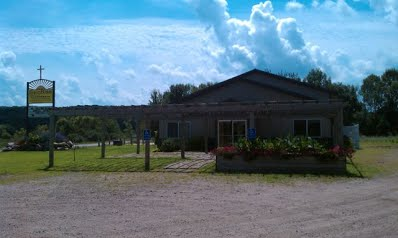

 We are here in this place to share the love of Christ throughout the community. In other words, we are here for you! We want you to know about what makes us tick. We want you to hear about the most important thing in our lives. We are a place devoted to sharing this with everyone of every age. We not only welcome children, but encourage children of all ages to be present and a part of our community. We have a relaxed attitude and environment. There is no dress code, come as you are! Above all, come and be part of a community that loves and cares for one another and enjoys serving their neighbor and their maker. We meet for worship worship at 9:00AM on Sunday mornings and have Sunday school starting at 10:15AM.